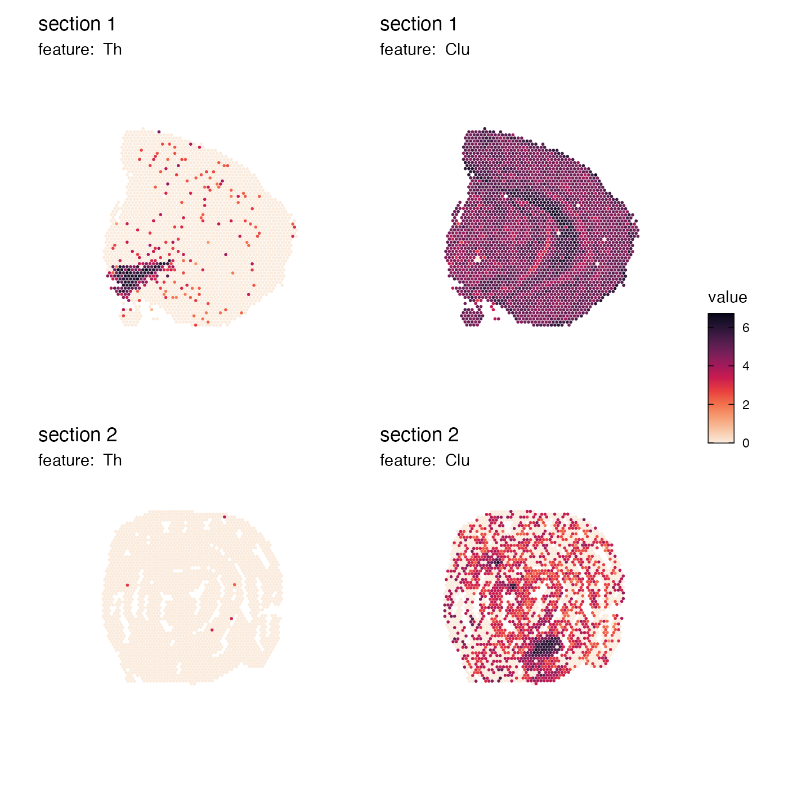
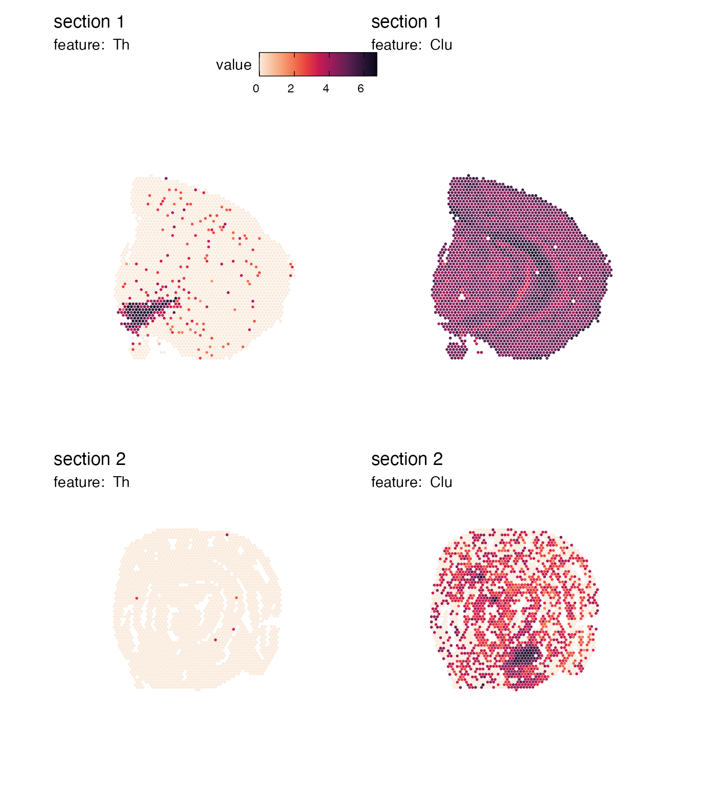
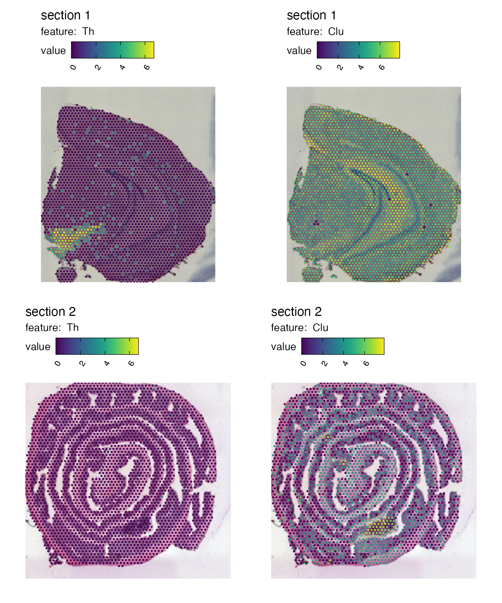
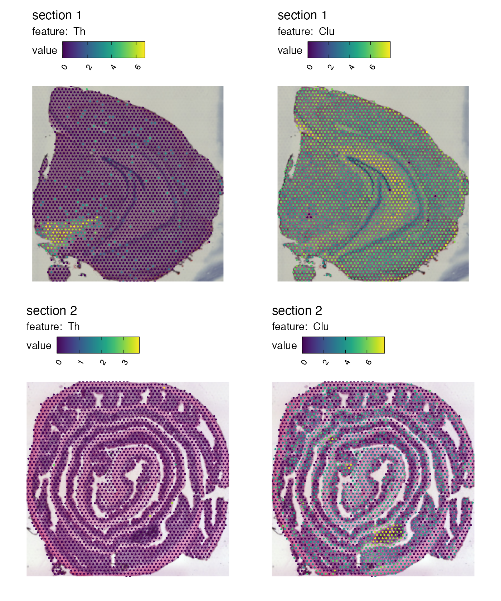
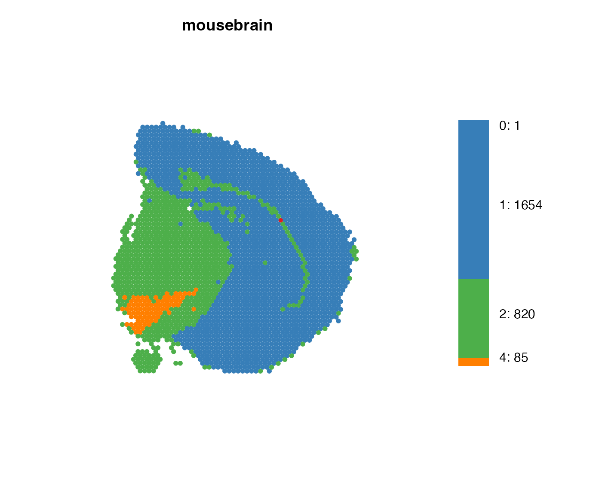
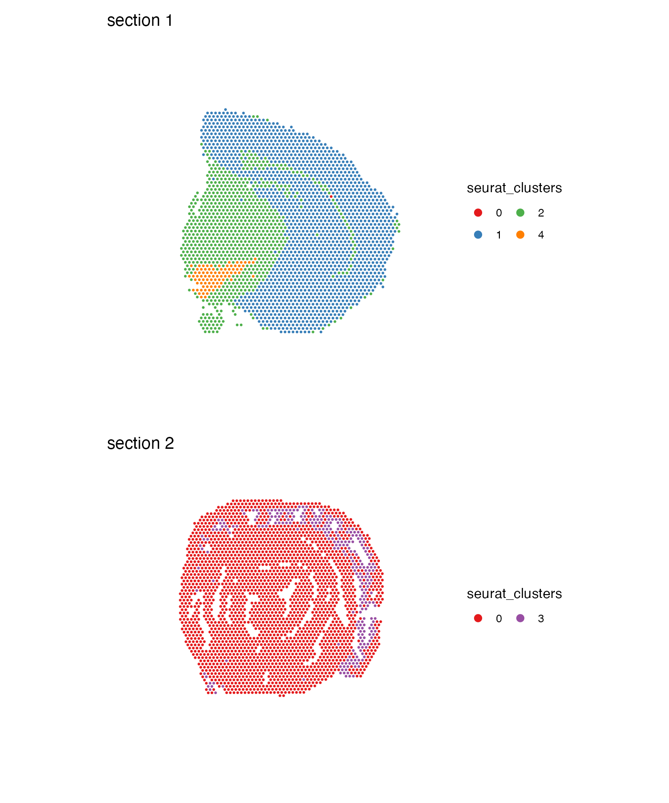
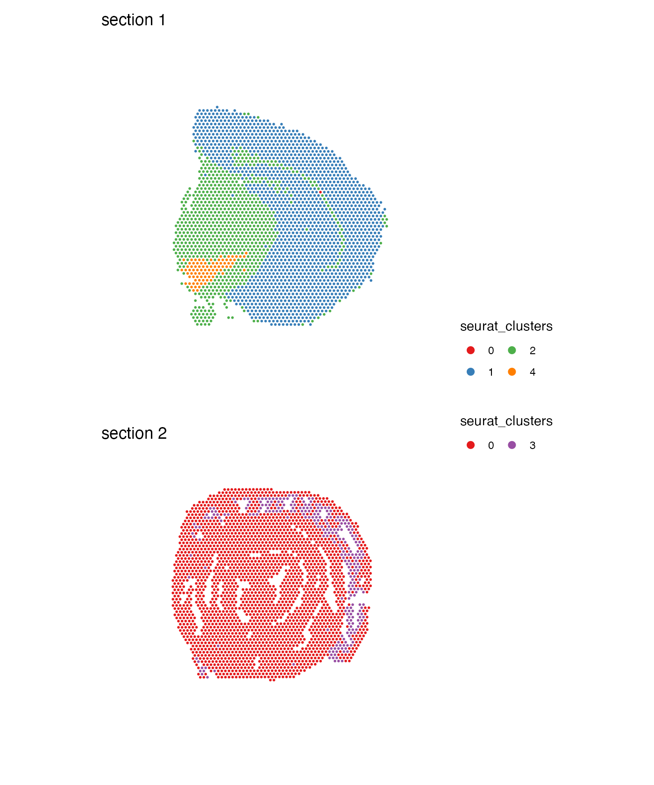

Advanced visualization
advanced_visualization.RmdIn this tutorial, we’ll have a look at different ways of creating
spatial plots with STUtility2. Functions such as
MapFeatures and MapLabels produce patchworks
(see R package patchwork) which are
easy to manipulate after they have been created.
The patchwork R package is extremely versatile and makes
it easy to customize your figures! Here we’ll have a look at some
options that comes with MapFeatures and
MapLabels a couple of tips and tricks for how to use the
patchwork R package.
This tutorial is an extension of the ‘Map numeric features’ and ‘Map
categorical features’ tutorials. Here you can find more in depth details
about how to manipulate various components of the plots generated with
MapFeatures and MapLabels as well as some
additional plot functions.
Load data
First we need to load some 10x Visium data. here we’ll use a mouse
brain tissue dataset and a mouse colon dataset that are shipped with
STUtility2.
# Load data
se_mbrain <- readRDS(file = system.file("extdata",
"mousebrain/se_mbrain",
package = "STUtility2"))
se_mbrain$sample_id <- "mousebrain"
se_mcolon <- readRDS(file = system.file("extdata",
"mousecolon/se_mcolon",
package = "STUtility2"))
se_mcolon$sample_id <- "mousecolon"
se <- MergeSTData(se_mbrain, se_mcolon)We can use the functions MapFeatures and
MapLabels to make spatial plots showing the distribution of
numeric or categorical features. For those who are familiar with
Seurat, these functions are similar to
SpatialFeaturePlot and SpatialDimPlot in the
sense that the first can be used to visualize numeric data and the
latter can be used to color data points based on categorical data.
Map numeric features
Let’s get started with MapFeatures. The most basic usage
is to map gene expression spatially:
cols <- RColorBrewer::brewer.pal(n = 11, name = "Spectral") |> rev()
p <- MapFeatures(se, features = c("Th", "Clu"), colors = cols)
p
We can also use the function MapFeaturesSummary to add a
subplot next to the spatial plot summarizing the gene expression in the
section using either a box plot, a violin plot, a histogram, or a
density plot.
This function only takes one gene at the time, but you can patch two plots together manually if desired.
p <- MapFeaturesSummary(se,
features = "Clu",
subplot_type = "violin",
colors = cols)
p
p1 <- MapFeaturesSummary(se,
section_number = 1,
features = "Clu",
subplot_type = "box",
colors = cols)
p2 <- MapFeaturesSummary(se,
section_number = 1,
features = "Clu",
subplot_type = "density",
colors = cols)
p1|p2
Overlay maps on images
If we want to create a map with the H&E images we can do this by
setting image_use = raw. But before we can do this, we need
to load the images into our Seurat object:
se <- LoadImages(se, verbose = FALSE)
p <- MapFeatures(se, features = c("Th", "Clu"), image_use = "raw", colors = cols)
p
Right now it’s quite difficult to see the tissue underneath the spots. We can add some opacity to the colors which is scaled by the feature values to make spots with low expression transparent:
p <- MapFeatures(se, features = c("Th", "Clu"), image_use = "raw",
colors = cols, scale_alpha = TRUE)
pTranspose patchwork layout
By default, MapFeatures arranges features in columns and
samples in rows. We can transpose the plot by setting
arrange_features to “row”:
p <- MapFeatures(se, features = c("Th", "Clu"), arrange_features = "row", color = cols)
p
Independent color bars
The color bars are now identical for each feature.
MapFeatures calculates the range for each feature and uses
this range to determine the limits of the color bars. If you want to
change this behavior to scale the values independently, you can set
scale = "free":
p <- MapFeatures(se, features = c("Th", "Clu"), scale = "free", colors = cols)
pFit plot area to spots
MapFeatures used the image dimensions to define the plot
area dimensions. Sometimes, if you have a very small piece of tissue,
you will end up with a lot of white space. You can override this
behavior by setting override_plot_dims = TRUE which will
make MapFeatures compute the dimensions based on your
coordinates. Notice how the tissues are expanded:
p <- MapFeatures(se, features = c("Th", "Clu"), override_plot_dims = TRUE, color = cols)
p
Controlling themes
Themes can be modified by adding a new ggplot theme using the
& operator. This operator will make sure that the theme
is added to each subplot in our patchwork. As an example, let’s say that
we want to place the legends on the right side of our plots instead:
p <- MapFeatures(se, features = c("Th", "Clu"), color = cols) &
theme(legend.position = "right", legend.text = element_text(angle = 0))
pWe can also remove the color legends entirely:
p <- MapFeatures(se, features = c("Th", "Clu"), colors = cols) &
theme(legend.position = "none")
pOr remove everything except the spatial feature map:
p <- MapFeatures(se, features = c("Th", "Clu"), colors = cols) &
theme(legend.position = "none",
plot.title = element_blank(),
plot.subtitle = element_blank())
pCollect color bars
If we don’t want to have the same color bar next to each tissue
section, we can collect identical color bars and place them on the side.
We can use plot_layout(guides = "collect") to modify this.
Note that if we want to place the color bar on the right side of the
plots, we need to set arrange_features = "row"` and adjust
the legend position:
p <- MapFeatures(se, features = c("Th", "Clu"), arrange_features = "row", colors = cols) +
plot_layout(guides = "collect") &
theme(legend.position = "right", legend.text = element_text(angle = 0))
p
This already looks quite good, but the color bars are a bit misplaced. We can adjust their placement by modifying the legend margins:
p <- MapFeatures(se, features = c("Th", "Clu"), arrange_features = "row", color = cols) +
plot_layout(guides = "collect") &
theme(legend.position = "right",
legend.text = element_text(angle = 0),
legend.margin = margin(t = 50, r = 0, b = 100, l = 0))
pDo not do this
If we set scale = "free", the color bars are no longer
unique and it doesn’t make sense to collect the color bars anymore:
p <- MapFeatures(se, features = c("Th", "Clu"), arrange_features = "row",
scale = "free", colors = cols) +
plot_layout(guides = "collect") &
theme(legend.position = "right",
legend.text = element_text(angle = 0),
legend.margin = margin(t = 50, r = 0, b = 100, l = 0))
pDo not do this either
If we set arrange_features = "col", the placement of the
color bar will not make sense in this case either. The color bars are
now located on the right side, but the features are arranged by row:
p <- MapFeatures(se, features = c("Th", "Clu"), arrange_features = "col", colors = cols) +
plot_layout(guides = "collect") &
theme(legend.position = "right",
legend.text = element_text(angle = 0),
legend.margin = margin(t = 50, r = 0, b = 100, l = 0))
pInstead, if we want to arrange features by columns, it would make more sense to place the color bars on top of each column and adjust the legend margins accordingly:
p <- MapFeatures(se, features = c("Th", "Clu"), arrange_features = "col", color = cols) +
plot_layout(guides = "collect") &
theme(legend.position = "top",
legend.text = element_text(angle = 0),
legend.margin = margin(t = 0, r = 100, b = 0, l = 10))
p
Remove plot margins
If you still think that there’s too much empty space around the
tissues in the patchwork, you try setting
override_plot_dims = TRUE which will crop the plot area to
only fit the spots:
p <- MapFeatures(se, features = c("Th", "Clu"), override_plot_dims = TRUE, color = cols)
p
Crop
H&E images will also be cropped to fit the new plot dimensions if
override_plot_dims = TRUE. This can be particularly useful
when working with small tissue sections that only cover a small portion
of the 10x Visium capture area.
p <- MapFeatures(se, features = c("Th", "Clu"), image_use = "raw",
override_plot_dims = TRUE, color = cols)
p
Note that the plots dimensions are calculated for the entire dataset
when override_plot_dims = TRUE.
If the tissue sections are placed in very different part of the capture area, the resulting “crop” window might not be what you are looking for. If you want to avoid this behavior, it is better to make two separate plots. Notice the difference in the plot below compared to the previous plot. The previous plot had some empty space outside of the tissue.
p1 <- MapFeatures(se, features = c("Th", "Clu"), image_use = "raw",
override_plot_dims = TRUE, color = cols, section_number = 1)
p2 <- MapFeatures(se, features = c("Th", "Clu"), image_use = "raw",
override_plot_dims = TRUE, color = cols, section_number = 2)
p1 / p2
We can also crop the images manually by defining a
crop_area. The crop_area should be a vector of
length four defining the corners of a rectangle, where the x- and y-axes
are defined from 0-1.
In order to decide how this rectangle should be defined, you can get some help by adding a grid to the plot:
p <- MapFeatures(se, features = c("Th", "Clu"), image_use = "raw",
color = cols, pt_alpha = 0.5) &
theme(panel.grid.major = element_line(linetype = "dashed"), axis.text = element_text())
p
Now if we want to crop out the GALT tissue in the mouse colon sample we can cut the image at left=0.45, bottom=0.55, right=0.65, top=0.7:
p <- MapFeatures(se, features = c("Cd79a", "Clu"), image_use = "raw",
pt_size = 3, section_number = 2,
color = cols, crop_area = c(0.45, 0.55, 0.65, 0.7))
pAnd we can patch together a nice figure showing the expression both at a global level and inside the GALT:
p_global <- MapFeatures(se, features = c("Cd79a", "Clu"),
image_use = "raw", scale_alpha = TRUE,
pt_size = 1, section_number = 2, color = cols,
override_plot_dims = TRUE)
p_GALT <- MapFeatures(se, features = c("Cd79a", "Clu"),
image_use = "raw", scale_alpha = TRUE,
pt_size = 3, section_number = 2,
color = cols, crop_area = c(0.45, 0.55, 0.65, 0.7)) &
theme(plot.title = element_blank(),
plot.subtitle = element_blank(),
legend.position = "none")
(p_global / p_GALT)
Increase resolution
Right now, you can see that the resolution of zoomed in image is
quite low. The reason for this is that the images were loaded to have a
height of 400 pixels which is the default setting for
LoadImages. If you want to, you can reload the images in
higher resolution given that you provided higher resolution images as
input. For example, if you used the “tissue_hires_image.png” files as
input for ReadVisiumData, these images are roughly
2000x2000 pixels in size, so you can reload the images in higher
resolution. If we run LoadImages again and set
image_height = 1000 we should be able to view the H%&E
images in slightly higher resolution.
se_high_res <- LoadImages(se, image_height = 1000)## ## ── Load H&E images ──## ## ℹ Loading image from /private/var/folders/91/twz8ld_x3f98sr9yc2hq9xpn47blx2/T/RtmprkM4Jp/temp_libpath183557ba4179/STUtility2/extdata/mousebrain/spatial/tissue_hires_image.jpg## ℹ Scaled image from 2000x1882 to 1000x941 pixels## ℹ Loading image from /private/var/folders/91/twz8ld_x3f98sr9yc2hq9xpn47blx2/T/RtmprkM4Jp/temp_libpath183557ba4179/STUtility2/extdata/mousecolon/spatial/tissue_hires_image.jpg## ℹ Scaled image from 1804x2000 to 1000x1109 pixels## ℹ Saving loaded H&E images as 'rasters' in Seurat object
# Check object sizes
print(object.size(se), units = "MB")## 15.8 Mb
print(object.size(se_high_res), units = "MB")## 39.2 MbNote that these higher resolution images will take up more space and might slow down the plotting considerably.
p_global <- MapFeatures(se_high_res, features = c("Cd79a", "Clu"),
image_use = "raw", scale_alpha = TRUE,
pt_size = 1, section_number = 2, color = cols,
override_plot_dims = TRUE)
p_GALT <- MapFeatures(se_high_res, features = c("Cd79a", "Clu"),
image_use = "raw", scale_alpha = TRUE,
pt_size = 3, section_number = 2,
color = cols, crop_area = c(0.45, 0.55, 0.65, 0.7)) &
theme(plot.title = element_blank(),
plot.subtitle = element_blank(),
legend.position = "none")
(p_global / p_GALT)
Map categorical features
For categorical data, we use MapLabels instead of
MapFeatures. This function allows us to color our spots
based on some column of our Seurat object containing categorical
data.

Order of categories
Categorical data can be represented as character vectors or factors, but with factors it’s easier to control the order of the labels as well as their colors. If we want to customize the order, we can convert our column into a factor and set the levels as we please:
se$sample_id_factor <- factor(se$sample_id, levels = c("mousecolon", "mousebrain"))
MapLabels(se, column_name = "sample_id_factor", ncol = 1) &
theme(legend.position = "right")
Colors
If we pass a named vector of colors we can control the coloring of our labels:
MapLabels(se, column_name = "sample_id_factor", ncol = 1,
colors = c("mousecolon" = "#4477AA", "mousebrain" = "#CC6677")) &
theme(legend.position = "right")
Let’s run unsupervised clustering on our data to get slightly more interesting results to work with.
NB: It doesn’t make much sense to run data-driven clustering on two
completely different tissue types, but here we are only interested in
demonstrating how you can use MapLabels.
se <- se |>
NormalizeData() |>
ScaleData() |>
FindVariableFeatures() |>
RunPCA() |>
FindNeighbors(reduction = "pca", dims = 1:10) |>
FindClusters(resolution = 0.2)## Modularity Optimizer version 1.3.0 by Ludo Waltman and Nees Jan van Eck
##
## Number of nodes: 5164
## Number of edges: 170850
##
## Running Louvain algorithm...
## Maximum modularity in 10 random starts: 0.9210
## Number of communities: 5
## Elapsed time: 0 seconds
Format legend
Point size
If you want to increase the size of the spots in the color legend,
you can override the fill aesthetic that controls the
appearance of the points without changing the size of the points in the
plot. We can do this by using
guides(fill = guide_legend(override.aes = list(size = ...))):
MapLabels(se, column_name = "seurat_clusters", ncol = 1) &
guides(fill = guide_legend(override.aes = list(size = 3))) &
theme(legend.position = "right")
Legend arrangement
Another useful option is to adjust the arrangement of the color legend. For example, if you have a lot of different categories, it might be easier to read the labels if they are arranged in multiple columns:
MapLabels(se, column_name = "seurat_clusters", ncol = 1) &
guides(fill = guide_legend(override.aes = list(size = 3), ncol = 2)) &
theme(legend.position = "right")
Collect legends
Since all sub plots share the same color legends, we can collect them and place them on the side of the plot:
MapLabels(se, column_name = "seurat_clusters", ncol = 1) +
plot_layout(guides = "collect") &
guides(fill = guide_legend(override.aes = list(size = 3), ncol = 2)) &
theme(legend.position = "right")
Overlay maps on images
And just as with MapFeatures, we can add our H&E
images to the plots:
MapLabels(se, column_name = "seurat_clusters", image_use = "raw",
override_plot_dims = TRUE) +
plot_layout(guides = "collect") &
guides(fill = guide_legend(override.aes = list(size = 3), ncol = 2)) &
theme(legend.position = "right")
Split labels
Sometimes it can get cluttered in the plot and difficult to see where
each cluster is located in the tissue, especially when there are many
clusters and some of them have very similar colors. In this case,
MapLabels can split the data into separate panels, one for
each label:
MapLabels(se, column_name = "seurat_clusters", split_labels = TRUE) +
plot_layout(guides = "collect") &
theme(legend.position = "right")## Warning: No section_number selected. Selecting section 1.
When you split data, you can only do it for one section which is why
a warning is thrown and the first available section is selected. If you
want to use a different section, you can specify which one to use with
section_number:
MapLabels(se, column_name = "seurat_clusters", split_labels = TRUE,
section_number = 2, ncol = 1) +
plot_layout(guides = "collect") &
theme(legend.position = "right")
Remove background
When mapping categorical features in split view it might be more
useful to see the underlying image. If you set
drop_na = TRUE, the background spots will be removed:
MapLabels(se, column_name = "seurat_clusters", split_labels = TRUE,
image_use = "raw", drop_na = TRUE, override_plot_dims = TRUE) +
plot_layout(guides = "collect") &
theme(legend.position = "right",
plot.title = element_blank(),
plot.margin = margin(0, 5, 5, 0))## Warning: No section_number selected. Selecting section 1.